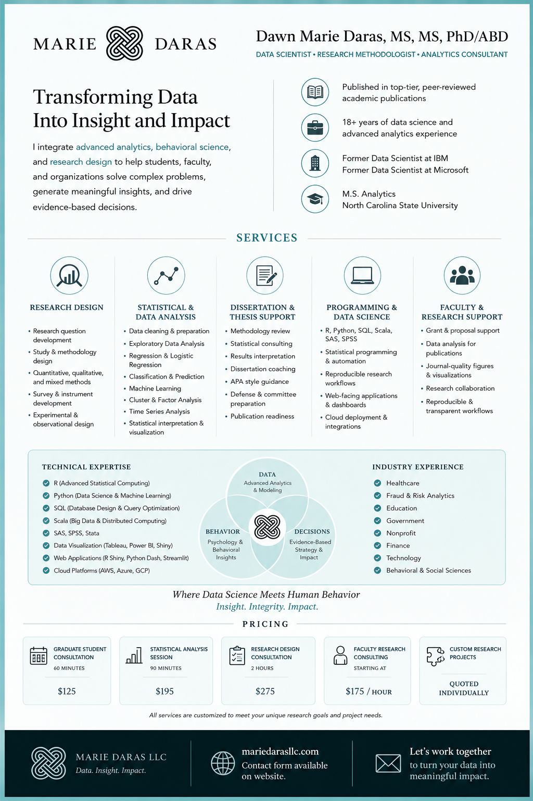

Dawn Marie Daras

Behavioral Data Science • Statistical Consulting • Reproducible Research
Request a Consultation
Behavioral Data Science • Statistical Consulting • Reproducible Research
Request a ConsultationI am a behavioral data scientist and research consultant specializing in statistical analysis, research design, data science workflows, and reproducible research systems.

This visual overview represents my approach to research design, statistical modeling, and data science workflows using Python, R, RStudio, SAS, and SPSS.
Work is conducted using Python (pandas, scikit-learn), R and RStudio, SAS, and SPSS. All analysis emphasizes reproducibility, transparency, and validated statistical inference.
Explore reproducible research examples and technical projects:
View GitHub Portfolio